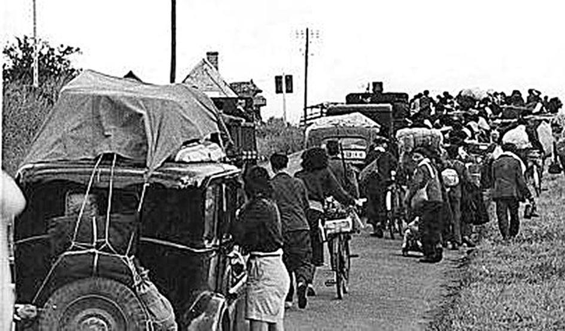
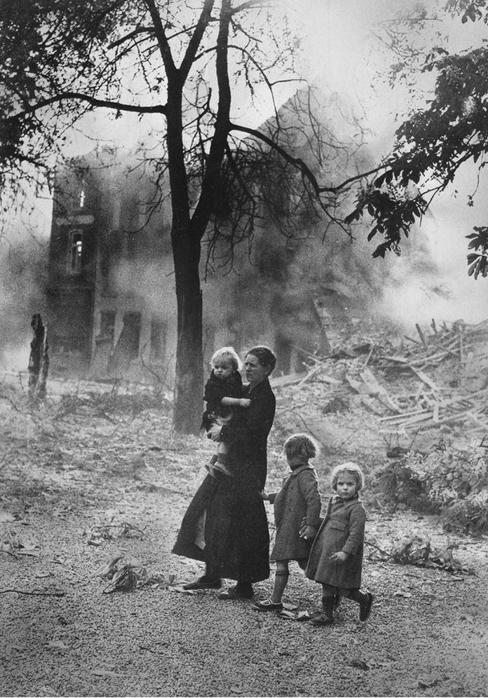
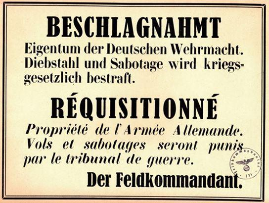

Même si « les anniversaires » de l’année de Gaulle ont été célébrés dans le dernier numéro de Méthode, il y a eu également cette année-là, en juin 1940, un sinistre événement que l’on préfère oublier. Cet événement oublié est celui de l’exode.
S’il est de bon ton de célébrer l’appel du 18 juin du général de Gaulle sur la Radio anglaise, que très peu de gens ont entendu, personne ne songe à commémorer le discours du 17 juin du Maréchal Pétain sur la Radio française. Ce discours amorça la fin de l’horreur de l’exode. La majorité des français accueillit avec un immense soulagement cette déclaration qui termina leurs malheurs lorsque se conclut la signature humiliante de l’armistice dans le wagon de Rethondes.
Il est très rare que je relise un livre, surtout un roman. J’ai pourtant relu entièrement « Suite Française » d’Irène Némirovsky, (en folio chez Denoël). J’avais déjà écrit quelques lignes sur cet ouvrage dans la revue Sans Frontières en mars 2016, mais de manière insuffisante et incomplète. J’avais alors brièvement insisté sur la seconde partie du roman.
On côtoie, dans Tempête en juin, la première partie de Suite française qui traite de l’exode de juin 1940, des personnages assez représentatifs de la population française de l’époque.
Population qui a pris cahin-caha les routes du Sud. Des Belges, des Hollandais, des Luxembourgeois par centaines de milliers se sont retrouvés sur les routes de France fuyant le péril allemand. Les Français du Nord, puis les parisiens allèrent grossir le flot des exilés se dirigeant ou plutôt errant sans but précis vers le Sud.
Les avions allemands, les bombardiers Junkers Ju 87, plus connus sous le nom de stuka équipés de leurs sinistres sirènes, installées sur les avions uniquement dans le but de terroriser, mitraillaient les colonnes de réfugiés en semant la panique. Les mitraillages et bombardements de civils ont avoisiné les 100 000 morts, autant que le nombre de militaires tués durant ce qui s’appellera « la campagne de France.»
Les historiens s’accordent aujourd’hui sur le chiffre de dix millions de personnes errant sur les routes de France. Soit plus du quart de la population à l’abandon sans aucune logistique ou assistance. Beaucoup de véhicules resteront abandonnés sur le bas côté, faute d’essence, leurs occupants continueront la route à pieds, emportant ce qui put l’être sur leurs épaules. Les fermes étaient considérées comme des lieux de ravitaillement qui furent, pour la plupart, très vite épuisées par les dons volontaires ou forcés, parfois par les pillages. Car cela a existé. La France allait connaître la pire des défaites de son histoire dans un chaos indescriptible. Le gouvernement et le parlement, fuyant Paris, prirent eux aussi le chemin de l’exil, espérant se reconstituer à Bordeaux, en abandonnant les populations à leur triste sort.
Le Maréchal Pétain donna son feu vert à la signature de l’armistice le 22 juin 1940 faisant cesser cette hécatombe. Le mythe qui se construisit par la suite et s’appuya sur le déni de l’histoire l’accabla de cet armistice. Comme il le déclara plus tard :
« Remplir son devoir est aisé à chacun, savoir où il se trouve n’est pas toujours facile. »
J’ai eu le privilège d’entendre de vive voix plusieurs témoignages de personnes qui ont vécu l’exode et de lire également de nombreux témoignages d’anonymes ou de célébrités. La réalité a dépassé tout ce que l’on peut imaginer : des tankistes fuyant avec leur char d’assaut, criant sur les réfugiés pour les faire se ranger sur les bas-côtés afin de pouvoir… fuir plus vite !
« La panique abolissait tout ce qui n’était pas instinct, mouvement animal frémissant de la chair. » p72
Le climat de l’exode est remarquablement décrit, les lieux sont peints avec une force et une simplicité par une plume alerte et sûre d’elle. Chaque paysage, chaque situation est un instantané que l’on a l’impression d’avoir soi-même vécu :
« À minuit, dans tout Orléans, il n’y avait pas une chambre libre, pas un lit. Des gens couchaient par terre dans les salles des cafés, dans les rues, dans les gares, la tête appuyée sur leurs valises. » p89
Des familles ont été séparées et ne se sont retrouvées que bien plus tard ou… pas du tout ! La Croix-Rouge a estimé à 90 000 le nombre d’enfants perdus devenus orphelins durant ces sinistres semaines. Il y a eu aussi au cours de cette incroyable odyssée des gestes héroïques de solidarité, des sacrifices volontaires. L’ouvrage de Némirovsky, inspiré par le vécu de l’auteur, son réel et ses connaissances est une vision romancée sur cette incroyable période. Cette description littéraire donne encore plus de force et de couleurs aux événements.
Dans Suite française on fait connaissance avec la famille Péricand, famille bourgeoise dont le père est conservateur de musée, anti républicain et dont le fils ainé, comme dans
toute bonne famille, est prêtre.
Ce dernier sera assassiné sur la route de l’exode par des adolescents dont il avait la charge.
Le plus jeune des fils, Hubert, dix-huit ans, rêve d’être un héros et d’aller se battre, il fuguera après quelques jours d’exil familial et reviendra penaud, retrouvant les siens après de longs jours d’errance. La scène du départ de Paris par les Péricand est assez cocasse ; après avoir descendu l’aïeul, impotent, de plusieurs étages et l’avoir mis dans l’auto, ce dernier dira aux infirmiers encore en sueur, qu’ils doivent le remonter pour satisfaire à un besoin. Dans son affolement et sa fuite, la famille, au départ d’une étape, oubliera l’ancêtre et s’en apercevra bien trop tard :
« Oui, elle avait agi en ces moments terribles avec fermeté, courage et sang-froid. Elle n’avait pas perdu la tête ! Elle n’avait pas perdu… Elle n’avait pas… Elle poussa brusquement un cri étranglé. Elle porta ses mains à son cou et se renversa en arrière, et sa gorge exhala un râle sourd comme si elle étouffait.
-Mon Dieu, Madame ! Madame se trouve mal ! s’exclama la nounou.
Madame Péricand d’une voix éteinte put enfin gémir :
-Nounou, ma pauvre Nounou, nous avons oublié…
-Mais quoi ? quoi donc ?
-Nous avons oublié mon beau-père, dit Mme Péricand, fondant en larmes. » p181
On côtoie également dans Tempête en juin, un écrivain renommé et riche qui prendra la route à contrecœur, en ne manifestant aucune solidarité envers ses compatriotes. Mais l’égoïsme était de mise en ces jours-là... Il finira par se faire voler son précieux repas par d’autres réfugiés.
On partagera le sort des Michaud, un modeste couple d’employés de banque, qui doit fuir en écoutant les consignes de la direction : se retrouver à Tours dans un premier temps…
Mais comment partir ? Pas de place en auto, restent les trains avec les gares bondées, les bagarres pour une place, d’abord dans les trains de voyageurs, puis dans les trains à bestiaux mis en service devant l’afflux de monde.
Les Michaud n’arriveront jamais à Tours et seront proprement licenciés pour abandon de poste, une fois les choses rentrées dans l’ordre.
Mais Monsieur Michaud ne s’estime pas des plus malheureux, il y a pire et il le sait :
« Malgré la fatigue, la faim, l’inquiétude, Maurice Michaud ne se sentait pas trop malheureux. Il avait une tournure d’esprit singulière, il n’attachait pas beaucoup d’importance à lui-même ; il n’était pas à ses propres yeux cette créature rare et irremplaçable que chaque homme voit lorsqu’il pense à lui-même. » p101
Tous ces gens se croisent et s’entrecroisent dans l’histoire ; ils sont parfois très proches sans jamais se rencontrer. Les Michaud seront très près de leur fils Jean-Marie sans pourtant le croiser. Leur fils, soldat mobilisé, sera blessé dans un bombardement et trouvera refuge dans une ferme.
La fin de la pagaille arrivera après l’armistice. Les gens commenceront un exil de retour, beaucoup, comme les Michaud, retrouveront leurs maisons ou leurs appartements, parfois intacts. D’autres n’auront pas cette chance.
Les éditions Denoël ont inclus à Suite française un journal d’Irène Némirovsky et un plan de travail du roman élaboré par la romancière elle-même. Ce travail aurait dû comporter cinq parties : « Tempête en juin, Dolce, Captivité, Les deux autres. » Hélas, seules les deux premières parties ont été écrites, Irène Némirovsky fût emmenée le 13 juillet 1942 par la gendarmerie agissant sur ordre de la police allemande au camp de Pithiviers, elle est transférée le 17 juillet à Auschwitz-Birkenau et meurt du typhus le 19 août.
La seconde partie, Dolce, est plus qu’une série de portraits psychologiques ; ce sont de véritables tableaux impressionnistes des trois personnages principaux qui occupent cette portion du livre. Dolce emplit plus de deux cents pages. La famille Angellier, bourgeois provinciaux, dont le fils Gaston est prisonnier en Allemagne, loge dans une grande maison à Bussy. Un officier allemand occupera une chambre réquisitionnée. Cet officier, cultivé et courtois, pianiste amateur a des points communs avec Lucile dont le mari est captif au-delà du Rhin. Ce mari absent n’a certes pas une aura extraordinaire et son portrait est celui d’un banal bourgeois de province :
« Gaston Angellier n’était âgé que de vingt-cinq ans au moment de son mariage, mais il avait cet aspect de maturité précoce que donne au provincial son existence sédentaire, la nourriture lourde et excellente dont il est gavé, l’abus de vin, l’absence de toute émotion vive et forte. C’est un sérieux trompeur qui ne touche que les habitudes et les pensées de l’homme, tandis que le sang chaud et riche de la jeunesse joue toujours en lui. » p322
Les deux femmes, l’épouse et madame mère, ne vivent pas en parfaite harmonie, elles se détestent cordialement :
« Entre ces deux femmes, chaque sujet de conversation ressemblait à un buisson d’épines ; on ne s’en approchait qu’avec prudence ; en y portant la main on risquait une blessure. » p312
Le même schéma se déroulera à quelques kilomètres de là, dans une ferme, dans un autre milieu social. Et c’est là que s’illustre toute la finesse de Némirovsky : dresser le même tableau vu sous un angle totalement différent ! Un officier interprète va être logé chez l’habitant, chez des paysans.
Chez ces paysans, où le fils des époux Michaud que nous avons rencontré dans Tempêtes en juin, a été recueilli blessé, puis partit une fois la santé recouvrée.
Le manuscrit de Suite française n’a pas été relu par l’auteur qui n’aurait jamais laissé passer les quelques erreurs qui s’y rencontrent. La jeune femme faisant visiter à cet officier interprète la chambre qu’il occupera dans la ferme, lui déclare :
« -Vous serez loin du bourg et je crains que la chambre ne soit pas assez bonne pour un gradé. Ce n’est qu’une ferme, ici, et vous n’aurez pas d’eau courante ni d’électricité chez nous, ni rien de ce qu’un monsieur a besoin. » p335
Hélas à la page 360, dans la même ferme, on peut lire quelques jours après :
« Il ne bougerait pas d’ici avant que l’Allemand fut rentré chez lui. Il le verrait allumer sa lampe. Bien sûr, l’électricité ne lui coûtait rien à lui. En effet au bout de quelques instants, une lumière brilla au bord de la fenêtre. »
Ou bien encore, lors d’une conversation entre cette fermière et cet officier :
« À cet instant, une grande horloge sonna midi. Bonnet rit, presque de plaisir. » p340
La conversation est juste un échange de quelques phrases banales, quand soudain :
« …les carrioles passaient sur la route, les églises sonnaient la prière du soir ; on les entendait les unes après les autres dans la campagne… » p341
Ces deux ou trois petites entorses concernant le confort électrique et la chronologie sont bien compréhensives et appellent l’indulgence du lecteur, Suite française est presque un roman « en direct » d’autant que le style ne faiblit jamais au long des plus de 500 pages :
« Elle tirait de son sac un fin mouchoir propre qui était toujours en réserve au cas où l’on évoquerait le souvenir de Gaston ou celui des malheurs de la France, et elle essuyait très délicatement ses paupières du geste dont on cueille une tache d’encre avec le coin d’un papier buvard. » p313
L’ensemble de l’ouvrage est un véritable plaisir de lecture, la maîtrise de la langue dans ses plus fines nuances surprend sans cesse le lecteur. Quelques réflexions personnelles agrémentent le texte le long des pages :
« Après tout, on ne juge le monde que d’après son propre cœur. L’avare seul voit les gens menés par l’intérêt, le luxurieux par l’obsession du désir. » p433
Dans les annexes que l’éditeur a glissées dans le livre on découvre une page du manuscrit, l’écriture est serrée, sans aucune rature. La correspondance de son mari, Michel Epstein, avec diverses personnalités pour essayer de faire libérer son épouse est poignante. Lui aussi sera déporté et trouvera la mort en camp de concentration. Un film inspiré de l’œuvre d’Irène Némirovsky a été réalisé en 2015.
Partager cette page